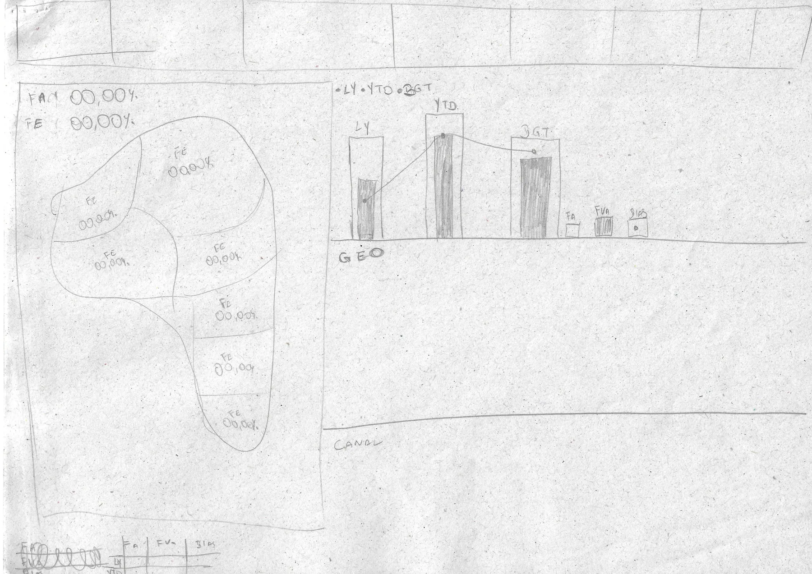
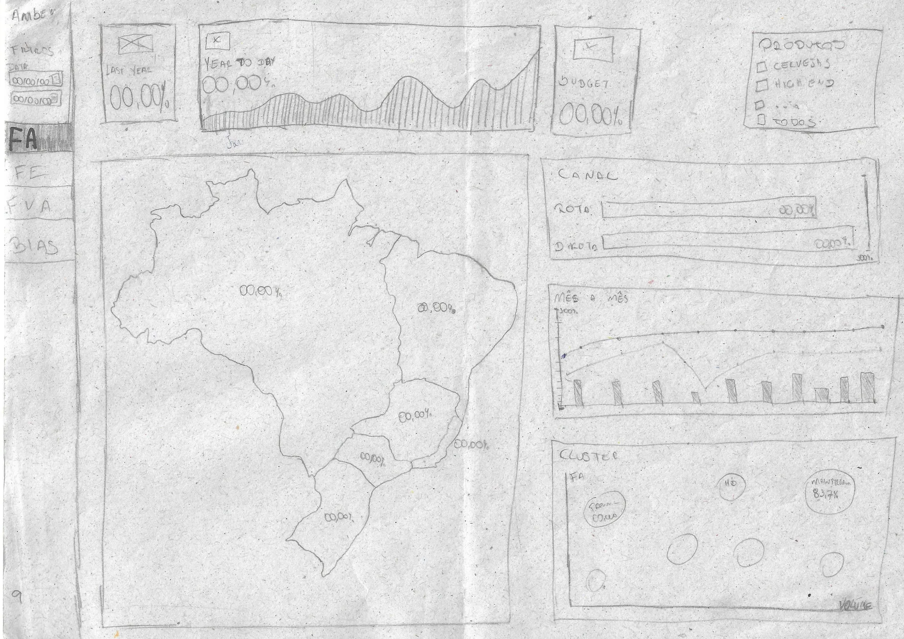
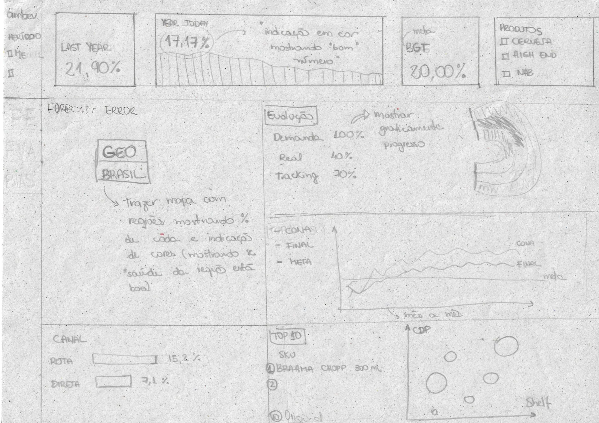
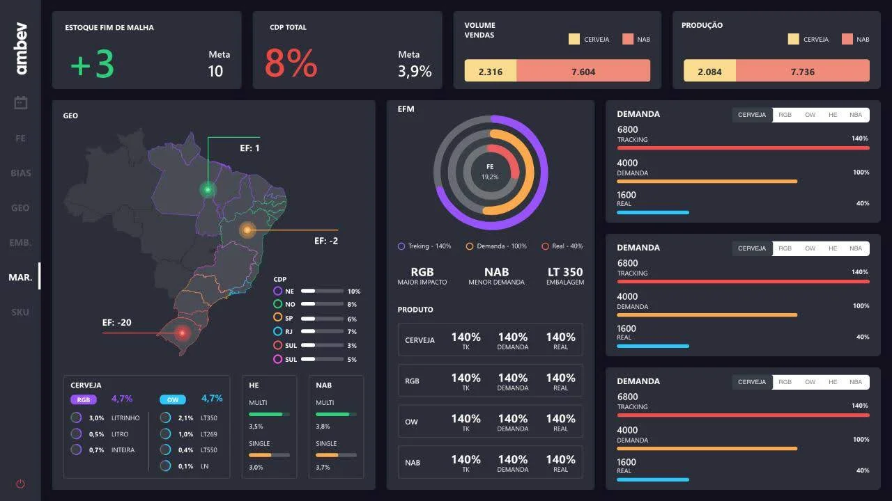
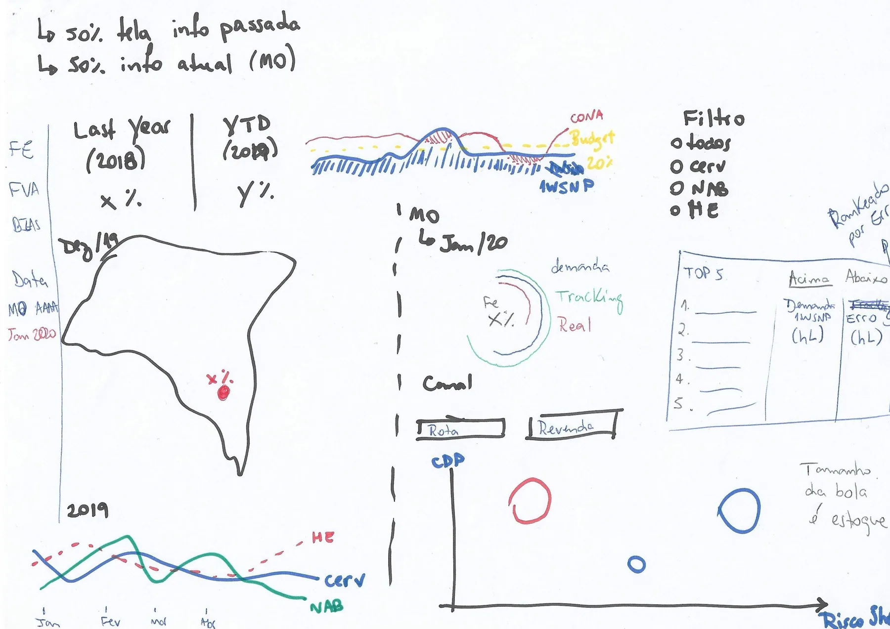
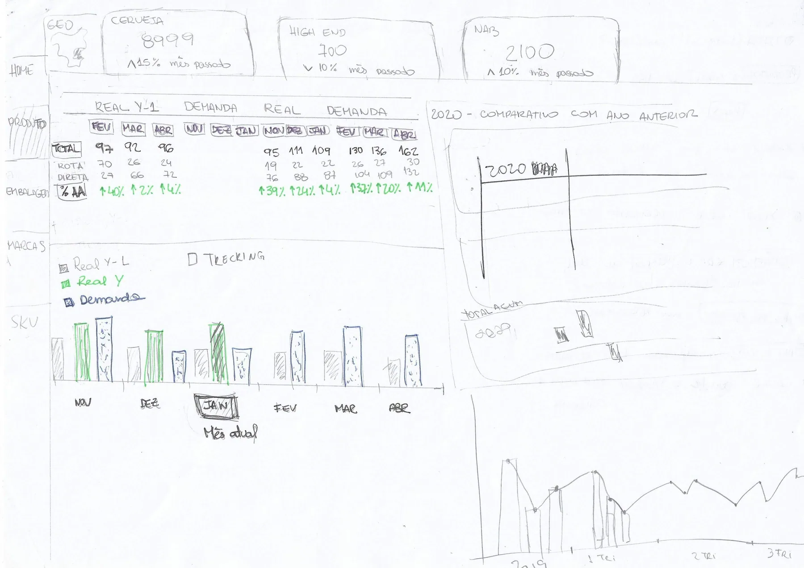
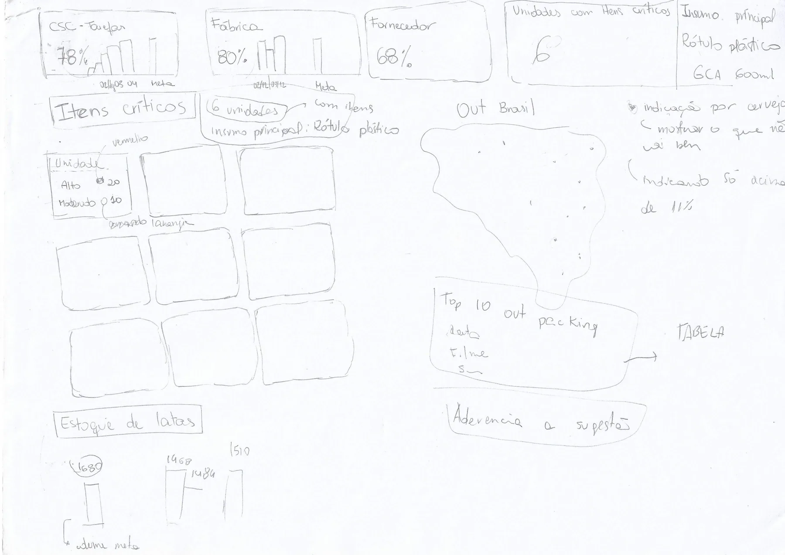

Perfis de operação
Identificar necessidades de CD, logística, regional e gestão.
Plataforma de monitoramento operacional logístico em escala nacional, transformando relatórios desconectados em uma leitura compartilhada do estado da operação.
Informações do Projeto
Projeto desenvolvido para estruturar uma leitura operacional compartilhada da distribuição logística em escala nacional.
Mais do que um projeto de interface, este trabalho envolveu compreender como uma operação logística nacional funciona no dia a dia.
A plataforma organizou rupturas, carregamentos e indicadores de disponibilidade em torno do estado da operação como unidade central de leitura.
Quatro perfis coexistiam na mesma operação: centros de distribuição, equipes logísticas, times regionais e gestores de operação.
Quando surgia ruptura ou atraso relevante, entender o impacto exigia cruzar informações manualmente entre relatórios, sistemas internos e planilhas regionais.
A operação existia, mas a leitura compartilhada da operação não.
Cada equipe mantinha uma visão parcial: carregamentos, ruptura, disponibilidade, frota e faturamento eram lidos em superfícies diferentes.
Essa fragmentação criava múltiplas versões da realidade logística e aumentava o tempo de resposta.
A arquitetura legada dificultava priorizar a exceção certa.
O gargalo era a falta de uma leitura operacional comum.
Centros de distribuição e times comerciais trabalhavam com leituras dessincronizadas, gerando rupturas e atrasos em carregamentos críticos.
A interface precisava mostrar onde estava o problema, qual região foi afetada e o que deveria ser priorizado.
Atuei como UX Designer organizando arquitetura e fluxos de decisão, em colaboração com pesquisa, especialistas logísticos e equipe de UI.
Identificar necessidades de CD, logística, regional e gestão.
Organizar indicadores ao redor da condição atual da distribuição.
Diferenciar monitoramento contínuo de exceções acionáveis.
Separar visão nacional, detalhe regional e causa raiz.
Projetar telas legíveis em desktop e telão operacional.
Traduzir rituais logísticos em fluxos acionáveis.
Condições que limitaram a solução e orientaram as decisões de arquitetura.
A decisão estrutural foi unificar indicadores de carregamento, ruptura e disponibilidade em torno do estado atual da distribuição.
Ciclo operacional estruturado:
A sequência de interfaces estrutura o monitoramento da distribuição e o controle de exceções operacionais em escala nacional.

Mapa geográfico integrado aos status por região para detectar desvios em tempo real.


Controle de carregamentos e detalhe regional para acompanhamento de frota e rotas.

Monitoramento de disponibilidade física e checagem de corte de pedidos nos centros de distribuição.


Priorização de carregamentos críticos e análise temporal de faturamento e produtividade logística.

Investigação de rupturas cruzando volumes demandados, trânsito e janelas de transporte.
A transmissão de dados de satélite de frotas terceirizadas exigia sinalização visual de idade do dado.
O despacho final de motoristas e a reprogramação de rotas continuaram sob responsabilidade de ERPs externos.
A centralização dos dados sincronizou a operação entre centros de distribuição, logística e times comerciais.
Ciclo completo de UX, arquitetura e testes em campo.
Visão unificada compartilhada por distribuição e gestão.
Trilha de leitura para alertas, carregamentos e desvios.
Perfis integrados na mesma interface de exceções.
Em operações de alta velocidade, hierarquia de sinal é tudo.
O design precisa guiar o olhar para a exceção que exige ação imediata sem apagar o contexto.